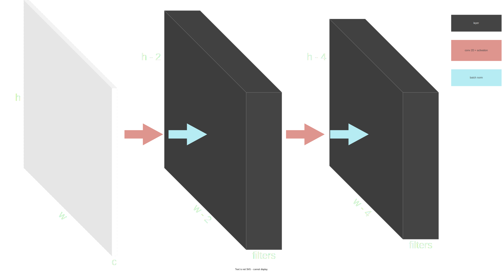

models¶
unet¶
- class flatiron.models.unet.UNetConfig(raw_data=None, trusted_data=None, deserialize_mapping=None, init=True, partial=True, strict=True, validate=False, app_data=None, lazy=False, **kwargs)[source]¶
Bases:
ModelConfiguration for UNet model.
- input_width¶
Input width.
- Type:
int
- input_height¶
Input height.
- Type:
int
- input_channels¶
Input channels.
- Type:
int
- classes¶
Number of output classes. Default: 1.
- Type:
int, optional
- filters¶
Number of filters for initial con 2d block. Default: 16.
- Type:
int, optional
- layers¶
Total number of layers. Default: 9.
- Type:
int, optional
- activation¶
Activation function to be used. Default: relu.
- Type:
KerasTensor, optional
- batch_norm¶
Use batch normalization. Default: True.
- Type:
KerasTensor, optional
- output_activation¶
Output activation function. Default: sigmoid.
- Type:
KerasTensor, optional
- kernel_initializer¶
Default: he_normal.
- Type:
KerasTensor, optional
- attention_gates¶
Use attention gates. Default: False.
- Type:
KerasTensor, optional
- attention_activation_1¶
First activation. Default: ‘relu’
- Type:
str, optional
- attention_activation_2¶
Second activation. Default: ‘sigmoid’
- Type:
str, optional
- attention_kernel_size¶
Kernel_size. Default: 1
- Type:
int, optional
- attention_strides¶
Strides. Default: 1
- Type:
int, optional
- attention_padding¶
Padding. Default: ‘same’
- Type:
str, optional
- attention_kernel_initializer¶
Kernel initializer. Default: ‘he_normal’
- Type:
str, optional
- _schema = <schematics.deprecated.patch_schema.<locals>.Schema object>¶
- activation = <StringType() instance on UNetConfig as 'activation'>¶
- attention_activation_1 = <StringType() instance on UNetConfig as 'attention_activation_1'>¶
- attention_activation_2 = <StringType() instance on UNetConfig as 'attention_activation_2'>¶
- attention_gates = <BooleanType() instance on UNetConfig as 'attention_gates'>¶
- attention_kernel_initializer = <StringType() instance on UNetConfig as 'attention_kernel_initializer'>¶
- attention_kernel_size = <IntType() instance on UNetConfig as 'attention_kernel_size'>¶
- attention_padding = <StringType() instance on UNetConfig as 'attention_padding'>¶
- attention_strides = <IntType() instance on UNetConfig as 'attention_strides'>¶
- batch_norm = <BooleanType() instance on UNetConfig as 'batch_norm'>¶
- classes = <IntType() instance on UNetConfig as 'classes'>¶
- filters = <IntType() instance on UNetConfig as 'filters'>¶
- input_channels = <IntType() instance on UNetConfig as 'input_channels'>¶
- input_height = <IntType() instance on UNetConfig as 'input_height'>¶
- input_width = <IntType() instance on UNetConfig as 'input_width'>¶
- kernel_initializer = <StringType() instance on UNetConfig as 'kernel_initializer'>¶
- layers = <IntType() instance on UNetConfig as 'layers'>¶
- output_activation = <StringType() instance on UNetConfig as 'output_activation'>¶
- class flatiron.models.unet.UNetPipeline(config)[source]¶
Bases:
PipelineBase- _abc_impl = <_abc._abc_data object>¶
- flatiron.models.unet.attention_gate_2d(query, skip_connection, activation_1='relu', activation_2='sigmoid', kernel_size=1, strides=1, padding='same', kernel_initializer='he_normal', name='attention-gate', dtype='float16')[source]¶
Attention gate for 2D inputs. See: https://arxiv.org/abs/1804.03999
- Parameters:
query (KerasTensor) – 2D Tensor of query.
skip_connection (KerasTensor) – 2D Tensor of features.
activation_1 (str, optional) – First activation. Default: ‘relu’
activation_2 (str, optional) – Second activation. Default: ‘sigmoid’
kernel_size (int, optional) – Kernel_size. Default: 1
strides (int, optional) – Strides. Default: 1
padding (str, optional) – Padding. Default: ‘same’
kernel_initializer (str, optional) – Kernel initializer. Default: ‘he_normal’
name (str, optional) – Layer name. Default: attention-gate
dtype (str, optional) – Model dtype. Default: float16.
- Returns:
2D Attention Gate.
- Return type:
KerasTensor
- flatiron.models.unet.conv_2d_block(input_, filters=16, activation='relu', batch_norm=True, kernel_initializer='he_normal', name='conv-2d-block', dtype='float16')[source]¶
2D Convolution block without padding.
\begin{align} architecture & \rightarrow Conv2D + ReLU + BatchNorm + Conv2D + ReLU + BatchNorm \\ kernel & \rightarrow (3, 3) \\ strides & \rightarrow (1, 1) \\ padding & \rightarrow same \\ \end{align}- Parameters:
input (KerasTensor) – Input tensor.
filters (int, optional) – Default: 16.
activation (str, optional) – Activation function. Default: relu.
batch_norm (str, bool) – Default: True.
kernel_initializer (str, optional) – Default: he_normal.
name (str, optional) – Layer name. Default: conv-2d-block
dtype (str, optional) – Model dtype. Default: float16.
- Returns:
Conv2D Block
- Return type:
KerasTensor
{kind=link}
- flatiron.models.unet.get_unet_model(input_width, input_height, input_channels, classes=1, filters=32, layers=9, activation='leaky_relu', batch_norm=True, output_activation='sigmoid', kernel_initializer='he_normal', attention_gates=False, attention_activation_1='relu', attention_activation_2='sigmoid', attention_kernel_size=1, attention_strides=1, attention_padding='same', attention_kernel_initializer='he_normal', dtype='float16')[source]¶
UNet model for 2D semantic segmentation.
see: https://arxiv.org/abs/1505.04597 see: https://arxiv.org/pdf/1411.4280.pdf see: https://arxiv.org/abs/1804.03999
- Parameters:
input_width (int) – Input width.
input_height (int) – Input height.
input_channels (int) – Input channels.
classes (int, optional) – Number of output classes. Default: 1.
filters (int, optional) – Number of filters for initial con 2d block. Default: 32.
layers (int, optional) – Total number of layers. Default: 9.
activation (KerasTensor, optional) – Activation function to be used. Default: leaky_relu.
batch_norm (KerasTensor, optional) – Use batch normalization. Default: True.
output_activation (KerasTensor, optional) – Output activation function. Default: sigmoid.
kernel_initializer (KerasTensor, optional) – Default: he_normal.
attention_gates (KerasTensor, optional) – Use attention gates. Default: False.
attention_activation_1 (str, optional) – First activation. Default: ‘relu’
attention_activation_2 (str, optional) – Second activation. Default: ‘sigmoid’
attention_kernel_size (int, optional) – Kernel_size. Default: 1
attention_strides (int, optional) – Strides. Default: 1
attention_padding (str, optional) – Padding. Default: ‘same’
attention_kernel_initializer (str, optional) – Kernel initializer. Default: ‘he_normal’
dtype (str, optional) – Model dtype. Default: float16.
- Raises:
EnforceError – If input_width is not even.
EnforceError – If input_height is not even.
EnforceError – If layers is not an odd integer greater than 2.
EnforceError – If input_width and layers are not compatible.
- Returns:
UNet model.
- Return type:
tfm.Model